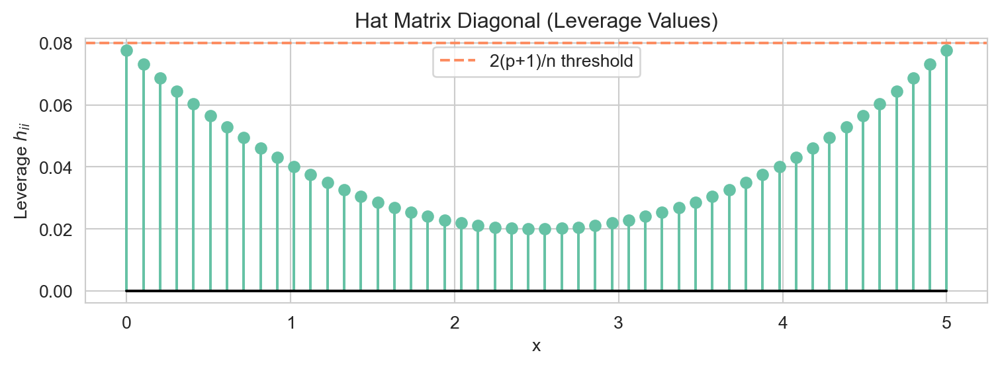

Libraries
import numpy as np
import matplotlib.pyplot as plt
import matplotlib.patches as mpatches
import seaborn as sns
sns.set_style('whitegrid')
sns.set_palette('Set2')John Robin Inston
April 2, 2026
May 22, 2026
A vector is an ordered list of real numbers. A column vector \(\mathbf{v} \in \mathbb{R}^n\) is written:
\[ \mathbf{v} = \begin{pmatrix} v_1 \\ v_2 \\ \vdots \\ v_n \end{pmatrix}. \]
Geometrically, a vector in \(\mathbb{R}^n\) represents a point (or a direction) in \(n\)-dimensional space.
Addition and scalar multiplication work element-wise:
\[ \mathbf{u} + \mathbf{v} = \begin{pmatrix} u_1 + v_1 \\ \vdots \\ u_n + v_n \end{pmatrix}, \qquad c\,\mathbf{v} = \begin{pmatrix} c v_1 \\ \vdots \\ c v_n \end{pmatrix}. \]
The inner product (dot product) of two vectors \(\mathbf{u}, \mathbf{v} \in \mathbb{R}^n\) is the scalar:
\[ \langle \mathbf{u}, \mathbf{v} \rangle = \mathbf{u}^\top \mathbf{v} = \sum_{i=1}^n u_i v_i. \]
Two vectors are orthogonal if their inner product is zero: \(\mathbf{u}^\top \mathbf{v} = 0\).
The Euclidean norm (length) of a vector is:
\[ \|\mathbf{v}\| = \sqrt{\mathbf{v}^\top \mathbf{v}} = \sqrt{\sum_{i=1}^n v_i^2}. \]
A vector with \(\|\mathbf{v}\| = 1\) is called a unit vector.
A linear combination of vectors \(\mathbf{v}_1, \ldots, \mathbf{v}_k\) is any vector of the form \(c_1 \mathbf{v}_1 + \cdots + c_k \mathbf{v}_k\). The span of a set of vectors is the collection of all their linear combinations.
Vectors \(\mathbf{v}_1, \ldots, \mathbf{v}_k\) are linearly independent if the only solution to \[c_1 \mathbf{v}_1 + \cdots + c_k \mathbf{v}_k = \mathbf{0}\] is \(c_1 = \cdots = c_k = 0\). Otherwise they are linearly dependent, meaning at least one vector can be written as a linear combination of the others.
Linear independence is central to regression: if the predictor variables are linearly dependent, the design matrix loses rank and we cannot uniquely estimate coefficients.
A matrix \(\mathbf{A} \in \mathbb{R}^{m \times n}\) is a rectangular array with \(m\) rows and \(n\) columns:
\[ \mathbf{A} = \begin{pmatrix} a_{11} & a_{12} & \cdots & a_{1n} \\ a_{21} & a_{22} & \cdots & a_{2n} \\ \vdots & & \ddots & \vdots \\ a_{m1} & a_{m2} & \cdots & a_{mn} \end{pmatrix}. \]
Addition and scalar multiplication are element-wise (matrices must have the same shape for addition). Matrix multiplication \(\mathbf{A}\mathbf{B}\) requires the inner dimensions to match: if \(\mathbf{A} \in \mathbb{R}^{m \times k}\) and \(\mathbf{B} \in \mathbb{R}^{k \times n}\) then \(\mathbf{C} = \mathbf{A}\mathbf{B} \in \mathbb{R}^{m \times n}\) with entries:
\[ c_{ij} = \sum_{l=1}^k a_{il}\, b_{lj}. \]
Note that matrix multiplication is not commutative in general: \(\mathbf{A}\mathbf{B} \neq \mathbf{B}\mathbf{A}\).
The transpose of \(\mathbf{A} \in \mathbb{R}^{m \times n}\) is \(\mathbf{A}^\top \in \mathbb{R}^{n \times m}\), obtained by swapping rows and columns: \((A^\top)_{ij} = a_{ji}\).
Key properties of the transpose:
\[ (\mathbf{A}^\top)^\top = \mathbf{A}, \qquad (\mathbf{A} + \mathbf{B})^\top = \mathbf{A}^\top + \mathbf{B}^\top, \qquad (\mathbf{A}\mathbf{B})^\top = \mathbf{B}^\top \mathbf{A}^\top. \]
The last identity is the reversal rule for transposes, and appears constantly in regression derivations.
A @ B:
[[ 58 64]
[139 154]]
(A @ B).T:
[[ 58 139]
[ 64 154]]
B.T @ A.T:
[[ 58 139]
[ 64 154]]The identity matrix \(\mathbf{I}_n \in \mathbb{R}^{n \times n}\) has ones on the diagonal and zeros elsewhere. It satisfies \(\mathbf{A}\mathbf{I} = \mathbf{I}\mathbf{A} = \mathbf{A}\) for any compatible matrix \(\mathbf{A}\).
A diagonal matrix has non-zero entries only on the main diagonal. Diagonal matrices are easy to invert: if \(\mathbf{D} = \mathrm{diag}(d_1, \ldots, d_n)\) with all \(d_i \neq 0\), then \(\mathbf{D}^{-1} = \mathrm{diag}(1/d_1, \ldots, 1/d_n)\).
A matrix is symmetric if \(\mathbf{A}^\top = \mathbf{A}\), i.e. \(a_{ij} = a_{ji}\) for all \(i, j\). Many important matrices in statistics are symmetric: covariance matrices, Gram matrices \(\mathbf{X}^\top \mathbf{X}\), and the hat matrix \(\mathbf{H}\).
A square matrix \(\mathbf{Q}\) is orthogonal if its columns are orthonormal (mutually orthogonal unit vectors), which implies:
\[ \mathbf{Q}^\top \mathbf{Q} = \mathbf{Q}\mathbf{Q}^\top = \mathbf{I}, \quad \text{i.e.} \quad \mathbf{Q}^{-1} = \mathbf{Q}^\top. \]
Orthogonal matrices preserve norms: \(\|\mathbf{Q}\mathbf{v}\| = \|\mathbf{v}\|\). They arise in eigendecompositions and in the geometric interpretation of least squares.
The rank of a matrix \(\mathbf{A} \in \mathbb{R}^{m \times n}\) is the maximum number of linearly independent columns (equivalently, rows). We always have \(\mathrm{rank}(\mathbf{A}) \leq \min(m, n)\).
For a square matrix \(\mathbf{A} \in \mathbb{R}^{n \times n}\), the inverse \(\mathbf{A}^{-1}\) satisfies:
\[ \mathbf{A}\mathbf{A}^{-1} = \mathbf{A}^{-1}\mathbf{A} = \mathbf{I}_n. \]
A square matrix \(\mathbf{A} \in \mathbb{R}^{n \times n}\) is invertible (non-singular) if and only if any of the following equivalent conditions hold:
Key properties of the inverse:
\[ (\mathbf{A}^{-1})^{-1} = \mathbf{A}, \qquad (\mathbf{A}\mathbf{B})^{-1} = \mathbf{B}^{-1}\mathbf{A}^{-1}, \qquad (\mathbf{A}^\top)^{-1} = (\mathbf{A}^{-1})^\top. \]
The reversal rule \((\mathbf{A}\mathbf{B})^{-1} = \mathbf{B}^{-1}\mathbf{A}^{-1}\) mirrors the reversal rule for transposes.
A quadratic form associated with a symmetric matrix \(\mathbf{A} \in \mathbb{R}^{n \times n}\) is the scalar-valued function:
\[ Q(\mathbf{v}) = \mathbf{v}^\top \mathbf{A} \mathbf{v} = \sum_{i=1}^n \sum_{j=1}^n a_{ij} v_i v_j. \]
Quadratic forms arise throughout statistics — for example, the OLS residual sum of squares is \(\mathrm{RSS} = \mathbf{e}^\top \mathbf{e}\) and the Mahalanobis distance is \((\mathbf{x} - \boldsymbol{\mu})^\top \boldsymbol{\Sigma}^{-1} (\mathbf{x} - \boldsymbol{\mu})\).
A symmetric matrix \(\mathbf{A}\) is:
Equivalently, \(\mathbf{A}\) is PD iff all its eigenvalues are strictly positive, and PSD iff all eigenvalues are non-negative.
The Gram matrix \(\mathbf{X}^\top \mathbf{X}\) is always PSD, and is PD (hence invertible) when \(\mathbf{X}\) has full column rank — a crucial condition for OLS to have a unique solution.
For a square matrix \(\mathbf{A} \in \mathbb{R}^{n \times n}\), a non-zero vector \(\mathbf{q}\) and scalar \(\lambda\) satisfying:
\[ \mathbf{A}\mathbf{q} = \lambda \mathbf{q} \]
are called an eigenvector and its associated eigenvalue, respectively. The eigenvalue equation says that \(\mathbf{A}\) stretches (or reflects) \(\mathbf{q}\) by factor \(\lambda\) without changing its direction.
Eigenvalues are found by solving the characteristic equation \(\det(\mathbf{A} - \lambda \mathbf{I}) = 0\).
A symmetric matrix \(\mathbf{A} \in \mathbb{R}^{n \times n}\) always has \(n\) real eigenvalues \(\lambda_1, \ldots, \lambda_n\) and \(n\) orthonormal eigenvectors \(\mathbf{q}_1, \ldots, \mathbf{q}_n\) (by the spectral theorem). We can write:
\[ \mathbf{A} = \mathbf{Q} \boldsymbol{\Lambda} \mathbf{Q}^\top, \]
where \(\mathbf{Q} = [\mathbf{q}_1 \mid \cdots \mid \mathbf{q}_n]\) is orthogonal and \(\boldsymbol{\Lambda} = \mathrm{diag}(\lambda_1, \ldots, \lambda_n)\).
A = np.array([[4.0, 2.0],
[2.0, 3.0]])
eigenvalues, eigenvectors = np.linalg.eigh(A) # eigh for symmetric matrices
print("Eigenvalues:", eigenvalues)
print("Eigenvectors (columns):\n", eigenvectors)
# Verify: A q = lambda q for first eigenpair
q1, lam1 = eigenvectors[:, 0], eigenvalues[0]
print("A @ q1:", A @ q1)
print("lam1 * q1:", lam1 * q1)Eigenvalues: [1.43844719 5.56155281]
Eigenvectors (columns):
[[ 0.61541221 -0.78820544]
[-0.78820544 -0.61541221]]
A @ q1: [ 0.88523796 -1.1337919 ]
lam1 * q1: [ 0.88523796 -1.1337919 ]Two convenient identities link eigenvalues to matrix invariants:
\[ \mathrm{tr}(\mathbf{A}) = \sum_{i=1}^n \lambda_i, \qquad \det(\mathbf{A}) = \prod_{i=1}^n \lambda_i. \]
These are useful for understanding properties of the hat matrix later.
Given a subspace \(\mathcal{V} \subseteq \mathbb{R}^n\), the orthogonal projection of a vector \(\mathbf{y}\) onto \(\mathcal{V}\) is the unique vector \(\hat{\mathbf{y}} \in \mathcal{V}\) closest to \(\mathbf{y}\) in Euclidean distance:
\[ \hat{\mathbf{y}} = \underset{\mathbf{v} \in \mathcal{V}}{\arg\min}\, \|\mathbf{y} - \mathbf{v}\|^2. \]
The residual \(\mathbf{e} = \mathbf{y} - \hat{\mathbf{y}}\) is orthogonal to every vector in \(\mathcal{V}\).
If \(\mathcal{V} = \mathrm{col}(\mathbf{X})\) (the column space of \(\mathbf{X}\)) and \(\mathbf{X}\) has full column rank, the orthogonal projection onto \(\mathcal{V}\) is the linear map: \[ \hat{\mathbf{y}} = \mathbf{H}\mathbf{y}, \qquad \mathbf{H} = \mathbf{X}(\mathbf{X}^\top \mathbf{X})^{-1}\mathbf{X}^\top. \] \(\mathbf{H}\) is called the hat matrix (or projection matrix).
Any orthogonal projection matrix \(\mathbf{H}\) satisfies two key properties:
Symmetric? True
Idempotent? True
Trace of H: 0.9999999999999999The trace of the hat matrix equals the number of columns in \(\mathbf{X}\) (i.e. \(p + 1\) for a model with an intercept and \(p\) predictors), which counts the “degrees of freedom” used by the model.
The complementary matrix \(\mathbf{M} = \mathbf{I} - \mathbf{H}\) projects onto the orthogonal complement of \(\mathrm{col}(\mathbf{X})\) and is also symmetric and idempotent. The residual vector in OLS is \(\mathbf{e} = \mathbf{M}\mathbf{y}\).
Suppose we have \(n\) observations \((y_i, x_{i1}, \ldots, x_{ip})\) for \(i = 1, \ldots, n\). The multiple linear regression model is:
\[ y_i = \beta_0 + \beta_1 x_{i1} + \cdots + \beta_p x_{ip} + \varepsilon_i. \]
Stacking all \(n\) equations, we can write this compactly as:
\[ \mathbf{y} = \mathbf{X}\boldsymbol{\beta} + \boldsymbol{\varepsilon}, \]
where:
\[ \mathbf{y} = \begin{pmatrix} y_1 \\ \vdots \\ y_n \end{pmatrix} \in \mathbb{R}^n, \quad \mathbf{X} = \begin{pmatrix} 1 & x_{11} & \cdots & x_{1p} \\ \vdots & \vdots & & \vdots \\ 1 & x_{n1} & \cdots & x_{np} \end{pmatrix} \in \mathbb{R}^{n \times (p+1)}, \quad \boldsymbol{\beta} = \begin{pmatrix} \beta_0 \\ \beta_1 \\ \vdots \\ \beta_p \end{pmatrix} \in \mathbb{R}^{p+1}. \]
\(\mathbf{X}\) is called the design matrix. The leading column of ones encodes the intercept term.
Ordinary least squares (OLS) minimises the residual sum of squares:
\[ \mathrm{RSS}(\boldsymbol{\beta}) = \|\mathbf{y} - \mathbf{X}\boldsymbol{\beta}\|^2 = (\mathbf{y} - \mathbf{X}\boldsymbol{\beta})^\top(\mathbf{y} - \mathbf{X}\boldsymbol{\beta}). \]
Expanding the quadratic form:
\[ \mathrm{RSS}(\boldsymbol{\beta}) = \mathbf{y}^\top\mathbf{y} - 2\boldsymbol{\beta}^\top\mathbf{X}^\top\mathbf{y} + \boldsymbol{\beta}^\top\mathbf{X}^\top\mathbf{X}\boldsymbol{\beta}. \]
Taking the gradient with respect to \(\boldsymbol{\beta}\) and setting it to zero:
\[ \frac{\partial\, \mathrm{RSS}}{\partial \boldsymbol{\beta}} = -2\mathbf{X}^\top\mathbf{y} + 2\mathbf{X}^\top\mathbf{X}\boldsymbol{\beta} = \mathbf{0}. \]
This gives the normal equations:
\[ \mathbf{X}^\top \mathbf{X}\,\hat{\boldsymbol{\beta}} = \mathbf{X}^\top \mathbf{y}. \]
When \(\mathbf{X}\) has full column rank, \(\mathbf{X}^\top\mathbf{X}\) is invertible and the unique solution is:
\[ \hat{\boldsymbol{\beta}} = (\mathbf{X}^\top \mathbf{X})^{-1}\mathbf{X}^\top \mathbf{y}. \]
The fitted values are then:
\[ \hat{\mathbf{y}} = \mathbf{X}\hat{\boldsymbol{\beta}} = \mathbf{X}(\mathbf{X}^\top\mathbf{X})^{-1}\mathbf{X}^\top\mathbf{y} = \mathbf{H}\mathbf{y}, \]
confirming that \(\mathbf{H}\) projects \(\mathbf{y}\) onto the column space of \(\mathbf{X}\).
np.random.seed(42)
n = 50
# True model: y = 1 + 2*x + noise
x = np.linspace(0, 5, n)
y = 1 + 2 * x + np.random.normal(0, 1, n)
# Design matrix (intercept + one predictor)
X = np.column_stack([np.ones(n), x])
# OLS via normal equations
XtX = X.T @ X
Xty = X.T @ y
beta_hat = np.linalg.solve(XtX, Xty) # solve is numerically preferred to inv()
print("beta_hat:", beta_hat) # should be close to [1, 2]
y_hat = X @ beta_hat
residuals = y - y_hat
print("RSS:", residuals @ residuals)beta_hat: [1.06444309 1.8840332 ]
RSS: 41.257089755557885Note that we use np.linalg.solve rather than explicitly computing np.linalg.inv(XtX). Solving the linear system directly is numerically more stable and avoids forming the inverse unnecessarily.
The hat matrix \(\mathbf{H} = \mathbf{X}(\mathbf{X}^\top\mathbf{X})^{-1}\mathbf{X}^\top\) has several properties that matter for regression diagnostics:
| Property | Formula | Interpretation |
|---|---|---|
| Symmetric | \(\mathbf{H}^\top = \mathbf{H}\) | Projection matrices are self-adjoint |
| Idempotent | \(\mathbf{H}^2 = \mathbf{H}\) | Projecting twice = projecting once |
| Trace | \(\mathrm{tr}(\mathbf{H}) = p + 1\) | Degrees of freedom used by the model |
| Eigenvalues | \(\lambda_i \in \{0, 1\}\) | Consequence of idempotency |
| Residuals | \(\mathbf{e} = (\mathbf{I} - \mathbf{H})\mathbf{y}\) | Residuals live in the null space of \(\mathbf{X}\) |
The diagonal entries \(h_{ii} = [\mathbf{H}]_{ii}\) are called leverage values. They measure how far observation \(i\) is from the centre of the predictor space; high-leverage points have a disproportionate influence on the fitted values.
H = X @ np.linalg.inv(X.T @ X) @ X.T
print("Symmetric?", np.allclose(H, H.T))
print("Idempotent?", np.allclose(H @ H, H))
print("Trace:", np.round(np.trace(H))) # = p + 1 = 2
leverages = np.diag(H)
fig, ax = plt.subplots(figsize=(8, 3))
ax.stem(x, leverages, markerfmt='C0o', linefmt='C0-', basefmt='k-')
ax.axhline(2 * (2) / n, color='C1', linestyle='--', label=f'2(p+1)/n threshold')
ax.set_xlabel('x')
ax.set_ylabel('Leverage $h_{ii}$')
ax.set_title('Hat Matrix Diagonal (Leverage Values)')
ax.legend()
plt.tight_layout()
plt.show()Symmetric? True
Idempotent? True
Trace: 2.0
Points at the extremes of the predictor range have the highest leverage — they exert the most pull on the estimated regression line. The conventional threshold for flagging high leverage is \(h_{ii} > 2(p+1)/n\).
Under the classical OLS assumptions (\(\mathbb{E}[\boldsymbol{\varepsilon}] = \mathbf{0}\), \(\mathrm{Var}(\boldsymbol{\varepsilon}) = \sigma^2 \mathbf{I}\)), the covariance matrix of \(\hat{\boldsymbol{\beta}}\) is:
\[ \mathrm{Var}(\hat{\boldsymbol{\beta}}) = \sigma^2 (\mathbf{X}^\top \mathbf{X})^{-1}. \]
This follows from the general formula \(\mathrm{Var}(\mathbf{A}\mathbf{y}) = \mathbf{A}\,\mathrm{Var}(\mathbf{y})\,\mathbf{A}^\top\) applied with \(\mathbf{A} = (\mathbf{X}^\top\mathbf{X})^{-1}\mathbf{X}^\top\):
\[ \mathrm{Var}(\hat{\boldsymbol{\beta}}) = (\mathbf{X}^\top\mathbf{X})^{-1}\mathbf{X}^\top \cdot \sigma^2\mathbf{I} \cdot \mathbf{X}(\mathbf{X}^\top\mathbf{X})^{-1} = \sigma^2(\mathbf{X}^\top\mathbf{X})^{-1}. \]
The diagonal entries of \((\mathbf{X}^\top\mathbf{X})^{-1}\) (scaled by \(\hat{\sigma}^2\)) give the estimated variances of \(\hat{\beta}_0, \hat{\beta}_1, \ldots, \hat{\beta}_p\), used to construct standard errors and \(t\)-statistics.
sigma2_hat = (residuals @ residuals) / (n - 2) # unbiased estimate: n - (p+1)
cov_beta = sigma2_hat * np.linalg.inv(X.T @ X)
se_beta = np.sqrt(np.diag(cov_beta))
print("Estimated coefficients:", np.round(beta_hat, 4))
print("Standard errors:", np.round(se_beta, 4))
print("t-statistics:", np.round(beta_hat / se_beta, 4))Estimated coefficients: [1.0644 1.884 ]
Standard errors: [0.2583 0.089 ]
t-statistics: [ 4.1203 21.1598]This chapter developed the matrix language used throughout the regression chapters. The key results are: